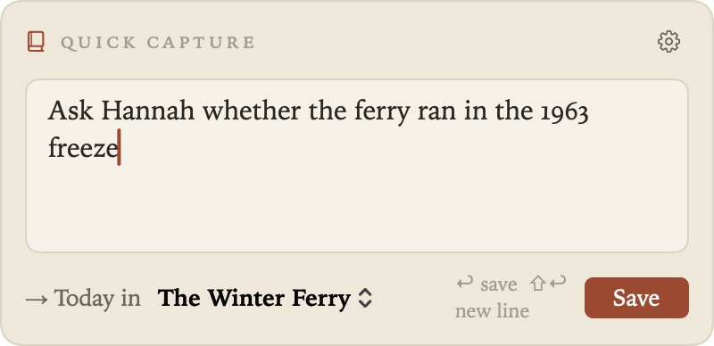
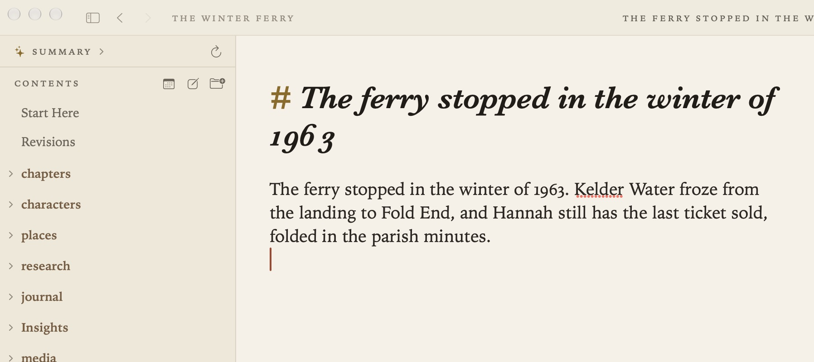
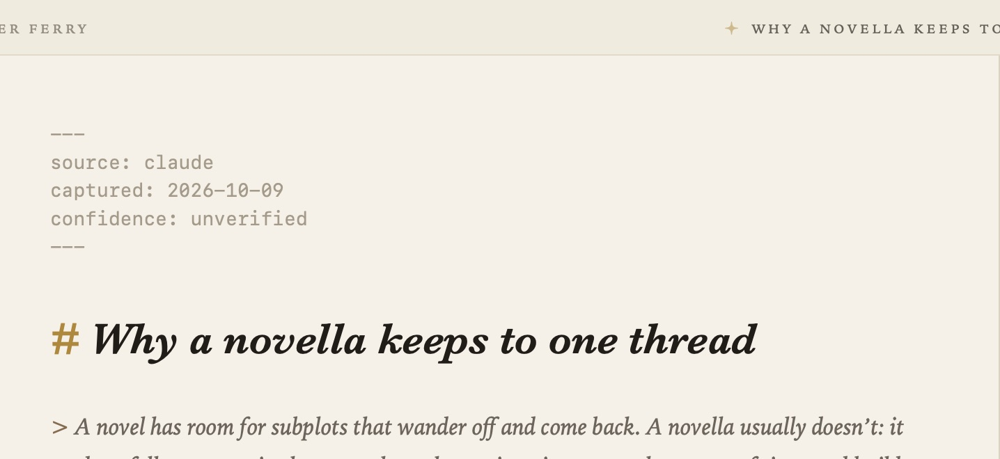
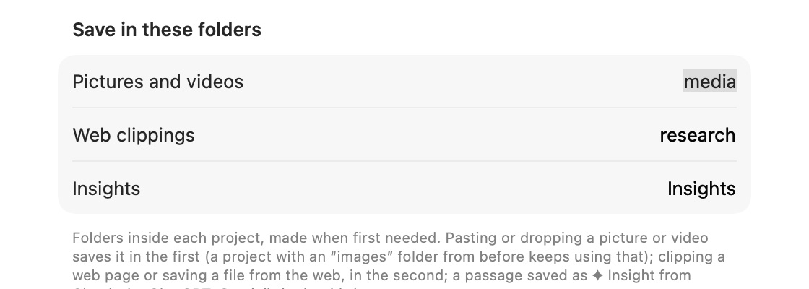

Quick Capture and Sharing
When a thought, a web page, a picture or a passage from an AI conversation turns up while you’re busy with something else, you can get it into Grasmere without stopping what you’re doing.
Quick capture
Click the book in the menu bar, or press ⌃⌥⌘N in any app, and a small box opens. Type a thought and press Return. It’s added to the end of today’s entry as a paragraph of its own, with the time.

A few things worth knowing:
- ⇧Return starts a new line in the box. Esc closes it and keeps what you’ve typed for next time.
- Today in … at the foot of the box chooses which project the line goes to. Grasmere remembers your choice.
- A web address on its own becomes a link titled with the page’s name.
- Quick capture works even when no Grasmere window is open.
In Settings ▸ Capture:
- Show in menu bar shows or hides the book.
- Open at login starts Grasmere quietly when you log in, with the menu bar item and no windows, so capture is always ready.
- Use a keyboard shortcut turns the shortcut on or off, and lets you record another. It needs at least one of ⌘, ⌥ or ⌃.
- Captures go to chooses the project.
If there’s no entry for today yet, Grasmere makes one, in the folder and from the template set in Settings ▸ General. See Journal.
Documents from the clipboard
New in 1.3. Copy something in another app, then choose one of these from Grasmere’s File menu. Grasmere reads the clipboard only when you choose one, and they’re dimmed when there’s nothing on it they can use.
- New Document from Clipboard (⇧⌘K) makes a document from what you copied. Copied text becomes a document in the project’s folder, titled from its first sentence. A copied web address is saved the way Save Web Page saves it, as the page’s article in your research folder. If you’ve saved the page before, you get the document you already have.
- Paste Link with Title puts a link to the copied web address where you’re typing, titled with the page’s name. Pasting a web address into a document with ⌘V does the same.
- A copied link to a PDF or a picture is saved in the research folder, beside a document that links to it.

Grasmere only downloads familiar kinds of file, such as PDFs, pictures, text and office documents. It checks that each file is what its name says, and marks it as downloaded from the internet, as Safari does. Grasmere never opens the files it downloads.
Insights from AI conversations
When Claude, ChatGPT or Gemini says something worth keeping, copy the passage, choose File ▸ New Insight from Clipboard and pick where it came from. It becomes an insight, a document in your insights folder with the passage quoted and who said it and when. Its front matter says confidence: unverified until you’ve checked it. A faint sparkle in the running head marks documents that quote a model.

The Share menu
In Safari, Finder, Photos and other apps, choose Share ▸ Grasmere to send a page, some text, a picture or a file to one of your projects, with a comment. It waits safely until Grasmere is next open, then it’s filed in the project you chose.
A web page is saved into that project’s research folder the way Save Web Page saves it, as its article in Markdown, with your comment under its title. See Research.
Settings
- Settings ▸ General ▸ Research sets the research folder (
researchby default), for web pages and files from the web. Save in these folders sets the Insights folder (Insightsby default). Both are made when they’re first needed.

Related
- Ask Your Documents and AI
- Privacy, for what Grasmere reads from the clipboard